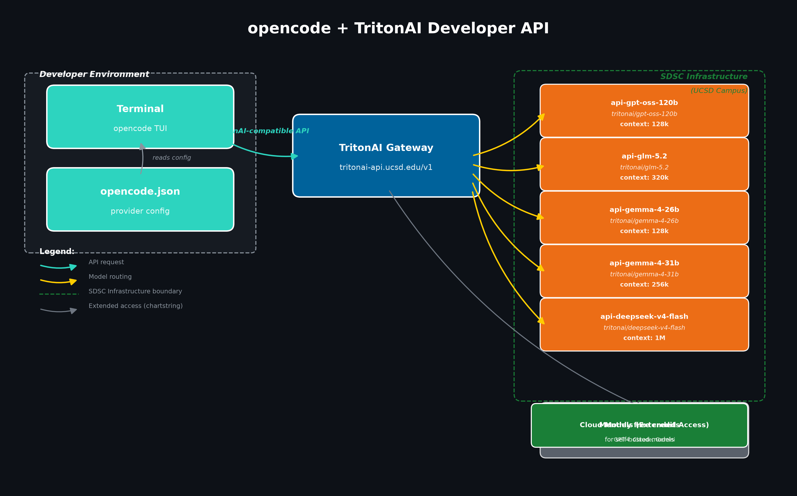

opencode is a terminal-based AI coding agent that supports any OpenAI-compatible API as a provider. If you don’t have it installed yet, see the installation instructions. UC San Diego’s TritonAI Developer API is exactly that: a secure, centralized LLM gateway that provides access to both commercial cloud models and self-hosted open-source models running on SDSC infrastructure.
This tutorial walks through the full setup: requesting access, discovering available models, adding TritonAI as an opencode provider, and testing that everything works.

Request API access
Before you can use the TritonAI Developer API, you need to request access through the Kuali Build form. You will need:
- Your UC San Diego credentials
- Department and project information
- An intended use case description
- A chart string for billing (only for usage beyond free credits)
Review timing depends on the use case and any required project-specific review. Once approved, you receive an API key and a monthly credit allocation for self-hosted models.
UCSD affiliates receive a monthly credit allocation for self-hosted models by default. This is designed for experimentation, coursework, and light prototyping. If you need more capacity or access to cloud-hosted commercial models (GPT-4, Claude, Gemini), you can request extended access with a chart string for billing. Allocations and rates can change; check the Model Hub for current details.
Store your API key
Once you receive your API key, store it as an environment variable. Add this line to your ~/.bashrc or ~/.zshrc:
export TRITONGPTKEY='your-api-key-here'Then reload your shell:
source ~/.bashrcDiscover available models
The TritonAI API exposes a standard OpenAI-compatible /v1/models endpoint. Query it with your API key to see what is available:
curl -s "https://tritonai-api.ucsd.edu/v1/models" \
-H "Authorization: Bearer $TRITONGPTKEY" | python3 -m json.toolAt the time of writing, the API returns the following models:
| Model ID | Type | Max context |
|---|---|---|
api-gpt-oss-120b |
Chat (reasoning) | 128k |
api-glm-5.2 |
Chat (reasoning) | 320k |
api-gemma-4-26b |
Chat (reasoning) | 128k |
api-gemma-4-31b |
Chat (reasoning) | 256k |
api-deepseek-v4-flash |
Chat (reasoning) | 1M |
api-cohere-transcribe |
Audio transcription | — |
api-lightonocr-1b |
OCR | 8k |
api-tgpt-embeddings |
Embeddings | 32k |
The UC-hosted models run on UC San Diego infrastructure at the San Diego Supercomputer Center. Restricted or health information requires a separately approved service path — see the Developer FAQ for details.
Add TritonAI as an opencode provider
opencode stores its configuration in ~/.config/opencode/opencode.json. The config uses the @ai-sdk/openai-compatible npm package for any OpenAI-compatible provider.
Here is a complete minimal config file that adds TritonAI as a provider with all five chat models:
{
"$schema": "https://opencode.ai/config.json",
"permission": "allow",
"provider": {
"tritonai": {
"npm": "@ai-sdk/openai-compatible",
"name": "TritonAI UCSD",
"options": {
"baseURL": "https://tritonai-api.ucsd.edu/v1",
"apiKey": "YOUR_TRITONGPTKEY"
},
"models": {
"gpt-oss-120b": { "name": "GPT-OSS 120B" },
"glm-5.2": { "name": "GLM 5.2" },
"gemma-4-26b": { "name": "Gemma 4 26B" },
"gemma-4-31b": { "name": "Gemma 4 31B" },
"deepseek-v4-flash": { "name": "DeepSeek V4 Flash" }
}
}
}
}Replace YOUR_TRITONGPTKEY with your actual API key. Never commit your API key to version control or share it publicly.
How the config maps to opencode model names
opencode references models using the pattern provider/model-id. With the config above, you get:
tritonai/gpt-oss-120btritonai/glm-5.2tritonai/gemma-4-26btritonai/gemma-4-31btritonai/deepseek-v4-flash
You can switch between them in the opencode interface or set a default model in the config with the "model" field at the top level.
Run opencode with TritonAI
Once your config is in place, start opencode from any project directory:
opencodeInside the opencode TUI, use /models to list all configured models and select tritonai/deepseek-v4-flash (or any other). You can also set a default model in opencode.json:
"model": "tritonai/deepseek-v4-flash"Example session
$ opencode
> What does the function calculate_alignment in src/alignment.py do?
tritonai/deepseek-v4-flash:
The function `calculate_alignment` takes two sequences as input and returns
the optimal alignment score using a dynamic programming approach. It builds
a scoring matrix where each cell represents the best alignment up to that
point, then backtracks to reconstruct the aligned sequences.
Key steps:
1. Initialize a matrix of size (len(seq1)+1) x (len(seq2)+1)
2. Fill the matrix using match/mismatch/gap penalties
3. Backtrack from the bottom-right cell to find the alignment path
> Can you add type hints and a docstring to it?
tritonai/deepseek-v4-flash:
[edits src/alignment.py]deepseek-v4-flash— fastest, best for quick questions and simple editsgpt-oss-120b— strong reasoning, good for complex refactorsgemma-4-31b— large context window, good for reviewing long filesglm-5.2— balanced reasoning and speed, largest context at 320k
Combining TritonAI with other providers
One of the strengths of opencode is that you can configure multiple providers side by side. For example, you might use TritonAI for self-hosted models (keeping sensitive data on campus) and a commercial provider for frontier model capabilities. Simply add additional blocks under the "provider" key.
Summary
UC San Diego’s TritonAI Developer API provides a secure, OpenAI-compatible gateway to both self-hosted and cloud-hosted LLMs. By adding it as a provider in opencode, you get a terminal-based AI coding agent backed by campus infrastructure. The monthly free credit allocation is sufficient for experimentation and light prototyping with the self-hosted models.
For more information, see the TritonAI Developer API documentation, the Get Started page, and the FAQs.